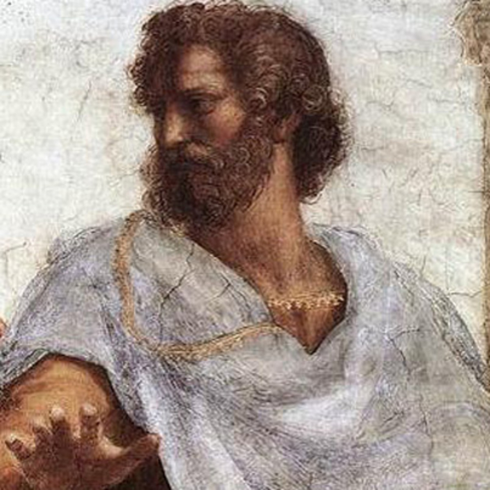

Aristóteles
Aristóteles fue tutor de Alejandro Magno y fundó su propia escuela, el Liceo, en Atenas.

Platón
Platón fue discípulo de Sócrates y maestro de Aristóteles. Fundó la Academia, la primera universidad de Occidente.

Sócrates
Sócrates nunca escribió sus enseñanzas; todo lo que sabemos de él proviene de sus discípulos, como Platón.

René Descartes
Descartes es considerado el padre de la geometría analítica y escribió gran parte de su obra en los Países Bajos.